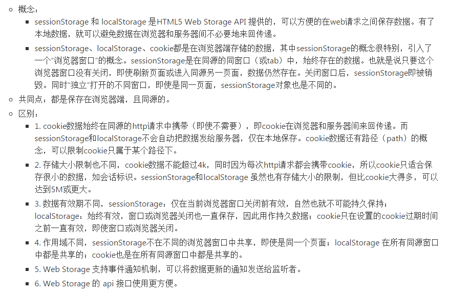
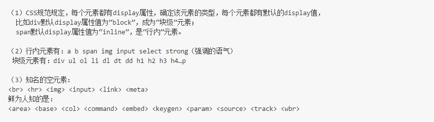
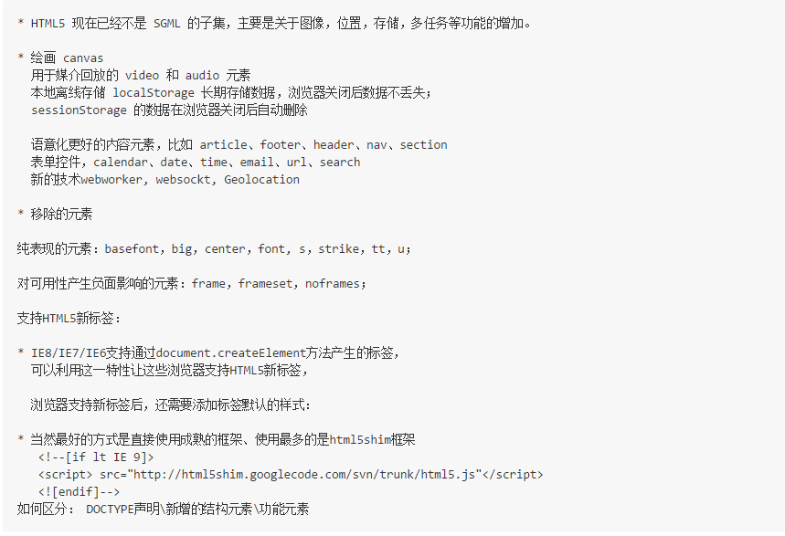
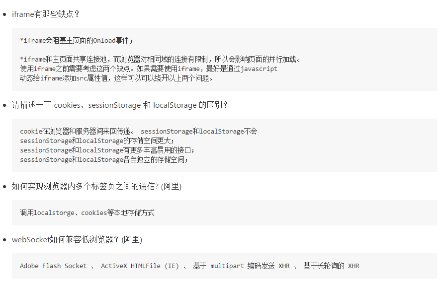

1.doctype（文档类型）的作用是什么？
doctype是DocumentType的简称即文档类型，doctype声明位于文档中最前面的位置，处于标签之前，告知浏览器使用的是哪种规范。
2.有多少种文档类型？
常见的文档类型有 Strict、Transitional 以及 Frameset 三种。
3.文档为什么要分类型？
如果文档不分类型，各浏览器就会形成多种写法，假如IE用<title>标签作为标题、火狐浏览器用<caption>标签作为标题，而另一种浏览器可能采用<mytitle>，这对于开发者和用户来说简直是灾难。W3C（万 维网联盟World Wide Web Consortium）制作了对所有方面都平衡的分歧解决方案，并且各浏览器没有异议，于是用<!doctype>（注意：作为一个特殊的标 签，它是不需要闭合的）标签来引入W3C的dtd文件，以达到规范页面的效果。这为浏览器的文档标准的统一以及开发人员和用户带了了便利。而html5不是基于SGML实现的，因此html不需要引入DTD，所以html5可以简单的声明一下<!doctype html>。
4.如果不声明doctype？
不写doctype，浏览器会进入quirks mode （混杂模式）。即，如果不声明doctype，浏览器不引入w3c的标准，那么早期的浏览器会按照自己的解析方式渲染页面。浏览器采用自身方式解析页面的行为称为"quirks mode（混杂模式也称怪异模式）"；采用w3c方式解析就是"strict mode（标准模式）"。 如果完全采用strictmode就不会出任何的差错，但这样会降低程序的容错率，加重开发人员的难度，因此在standards mode 里面分出来 Almost Standards Mode(接近标准模式）。
5.浏览器标准模式和怪异模式之间的区别是什么？
- 标准模式：浏览器根据规范呈现页面
- 混杂模式（怪异模式）：页面以一种比较宽松的兼容方式显示。
6.使用 XHTML 的局限有哪些？
XHTML较为严格，标签必须闭合，必须要body，head等
7.如果页面使用 'application/xhtml+xml' 会有什么问题吗？
一些老的浏览器并不兼容，IE876不支持。
8.data-属性的作用是什么？
data-为前端开发者提供自定义的属性，这些属性集可以通过对象的dataset属性获取，不支持该属性的浏览器可以通过 getAttribute方法获取。ppk提到过使用rel属性，lightbox库推广了rel属性，HTML5提供了data-做替代，这样可以更好 地使用自定义的属性。
9.请描述一下 cookies，sessionStorage 和 localStorage 的区别？

10.sessionStorage与页面 js 数据对象的区别
- 页面中一般的 js 对象或数据的生存期是仅在当前页面有效，因此刷新页面或转到另一页面这样的重新加载页面的情况，数据就不存在了。
- 而sessionStorage 只要同源的同窗口（或tab）中，刷新页面或进入同源的不同页面，数据始终存在。也就是说只要这个浏览器窗口没有关闭，加载新页面或重新加载，数据仍然存在
11.Web Storage带来的好处：
- 减少网络流量：一旦数据保存在本地后，就可以避免再向服务器请求数据，因此减少不必要的数据请求，减少数据在浏览器和服务器间不必要地来回传递。
- 快速显示数据：性能好，从本地读数据比通过网络从服务器获得数据快得多，本地数据可以即时获得。再加上网页本身也可以有缓存，因此整个页面和数据都在本地的话，可以立即显示。
- 临时存储：很多时候数据只需要在用户浏览一组页面期间使用，关闭窗口后数据就可以丢弃了，这种情况使用sessionStorage非常方便。
12.浏览器本地存储与服务器端存储之间的区别
- 其实数据既可以在浏览器本地存储，也可以在服务器端存储。
- 浏览器端可以保存一些数据，需要的时候直接从本地获取，sessionStorage、localStorage和cookie都由浏览器存储在本地的数据。
- 服务器端也可以保存所有用户的所有数据，但需要的时候浏览器要向服务器请求数据。
- 服务器端保存所有的用户的数据，所以服务器端的开销较大，而浏览器端保存则把不同用户需要的数据分布保存在用户各自的浏览器中。
- 浏览器端一般只用来存储小数据，而服务器可以存储大数据或小数据。
- 服务器存储数据安全一些，浏览器只适合存储一般数据。
13.请描述一下 GET 和 POST 的区别?
- get是从服务器获取数据 -----"取"; post是向服务器提交数据 -----“发”
- form表单默认的method为"GET"
- get将数据按照variable = value 的形式，加上URL的后面，中间用"?"连接，各个变量之间用"&"连接; post将数据不像get方式那样
- 参数上面3的数据传输方式，可以得出：post安全性比get方式要高
-
- URL不存在参数上限的问题，HTTP协议没有对URL长度进行限制，限制的是部分浏览器和服务器的限制。
- IE对URL长度的限制为2083KB
- get方式是通过URL传输的数据的，数据量一般在2KB左右，但是执行效率比post高
- 理论上post方式没有大小限制，HTTP协议规范也没进行大小限制。post数据没有限制，限制的是服务器处理程序的能力
14.行内元素有哪些？块级元素有哪些？ 空(void)元素有那些？
15.link 和@import 的区别是？
- （1）link属于XHTML标签，而@import是CSS提供的;
- （2）页面被加载的时，link会同时被加载，而@import引用的CSS会等到页面被加载完再加载;
- （3）import只在IE5以上才能识别，而link是XHTML标签，无兼容问题;
- （4）link方式的样式的权重 高于@import的权重.
16.浏览器的内核分别是什么?
* IE浏览器的内核Trident、Mozilla的Gecko、Chrome的Blink（WebKit的分支）、Opera内核原为Presto，现为Blink；
17.html5有哪些新特性、移除了那些元素？如何处理HTML5新标签的浏览器兼容问题？如何区分 HTML 和 HTML5？
18.语义化的理解？
- 用正确的标签做正确的事情！
- html语义化就是让页面的内容结构化，便于对浏览器、搜索引擎解析；
- 在没有样式CCS情况下也以一种文档格式显示，并且是容易阅读的。
- 搜索引擎的爬虫依赖于标记来确定上下文和各个关键字的权重，利于 SEO。
- 使阅读源代码的人对网站更容易将网站分块，便于阅读维护理解。
19.HTML5的离线储存？
localStorage 长期存储数据，浏览器关闭后数据不丢失；
sessionStorage 数据在浏览器关闭后自动删除。
